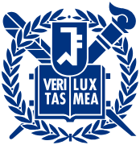

고려대 경영학부
고려대 경영학부

서울대 경제학부
PS:LAB REPORT
정은진 학생을 위한
퍼스널 입시 분석 보고서
"데이터를 기반으로 설계하고, 입학사정관의 시선으로 완성합니다."
CONSULTING OVERVIEW
안녕하세요, PS:LAB입니다.
보성고를 졸업하고 현재 서울대, 고려대, 한양대 등 명문대에서 공부 중인 선배들이 모인 입시 전략 팀입니다. 우리가 직접 겪고 뚫어낸 강남·송파 입시의 정답을 후배들에게 가장 직관적인 '데이터 리포트'로 전달하며, 합리적인 비용으로 최고의 퀄리티를 보장합니다.
고도화된 AI 환경으로 방대한 입시 데이터를 크로스체크합니다.
당장 실행 가능한 디테일만 제공합니다.
명문대 합격생이 직접 작성하는 고퀄리티 리포트.
체계적인 3단계 리포트 솔루션
정밀 데이터 분석
생기부를 입학사정관의 시선에서 냉정하게 평가하여 보완할 수 있는 핵심 키워드를 도출합니다.
스토리보드 기획
목표 대학 인재상에 완벽히 부합하는 방향성을 설정하고 탐구 및 독서 활동을 설계합니다.
실전 리포팅 & 피드백
실제 학교 활동에 바로 적용할 수 있는 디테일한 가이드 리포트를 제공하며 피드백을 진행합니다.
🎓 학생 프로필
- 이름 정은진
- 소속 진건고등학교 3학년 (경기권 일반고)
- 진로 법학과 지망 미디어 → 법학 전환
- 출결 결석 1 · 지각 2 · 조퇴 3 (전도 질병) 미인정 0회
- 봉사 누계 44시간 적절
- 내신 3.39등급 우상향 ↑
🎯 지원 전략 분류
👨💼 담당 멘토진
연·고·서·성 4관왕의 필승 로직 · 상위권 경영·경제 입시 해답
입시의 끝에서 정점에 도달하는 최적화 전략 · 고려대 전전 차석 / 한양대 인터칼리지 수석 합격
ACADEMIC DATA ANALYSIS
📈 내신 성적 추이
목표 대학(성신여대·단국대 소신 / 숙명여대 상향) 기준, 정량 수치는 다소 아쉬우나 4.0에서 2.8로의 수직 상승 우상향 곡선은 학업 발전 가능성 측면에서 강력한 서류 어필 포인트입니다.
📊 교과 상세 데이터
| 과목 | 1-1 | 1-2 | 2-1 | 2-2 | 목표 |
|---|---|---|---|---|---|
| 국어 | 5 | 5 | 4 | 3 | 2등급 ↑ |
| 수학 | 4 | 4 | 3 | 4 | 3등급 유지 |
| 영어 | 4 | 4 | 3 | 3 | 3등급 유지 |
| 사회 | 4 | 3 | 2.5 | 2.5 | 2등급 ↑ |
| 과학 | 4 | 4 | — | — | 결격 아님 |
STUDENT RECORD EVALUATION
학업 성취도 & 태도
- 성취도 내신 3.39로 목표 대학 기준 다소 아쉬우나, 4.0→2.8 수직 상승 곡선은 매우 높은 평가 가능.
- 태도 약점이었던 국어(5→3)를 끈기 있게 올린 태도가 돋보임. 3학년 2등급 진입 시 강력한 어필 포인트.
전공 적합성 & 탐구 역량
- 법학 전환의 논리 1학년 언론 윤리 탐구 → 2학년 딥페이크·명예훼손 규제 탐구 → 법학 지망으로 이어지는 자연스러운 서사가 구축됨.
- 핵심 세특 정치와 법(미필적 고의 논증, 회복적 정의)·생활과 윤리(인터넷 실명제·AI 필터링 제안)가 법학 지망의 직접 근거.
- 3학년 보완 실정법·판례 기반 심화 탐구로 전공 스토리 완성 필요. 지금이 결정적 시점.
봉사 & 리더십
- 봉사시간 누계 44시간(수상 경력 포함), 청소년의달표창 봉사부문 2위(378명 중). 3학년은 10시간 내외면 충분.
- 리더십 1학년 학급 부회장·정보 교과 조장·댄스팀 편집 등 주도적 활동 다수. 동아리(언론홍보, 방송부) 핵심 역할.
- 출결 정정 전도 질병 사유. 1학년 지각 1·조퇴 2, 2학년 결석 1·지각 1·조퇴 1. 미인정 0회 — 면접 리스크 없음.
📋 세특 현황 — 법학 전공 적합성 분석
TARGET UNIVERSITY ROADMAP
| 분류 | 대학 | 전형 | 합격자 평균 | 핵심 전략 & 주의사항 |
|---|---|---|---|---|
| 상향 | 숙명여대 법학부 [검증 완료] |
학종(숙명인재-면접) | 평균 3.05등급 | 우상향 내신 + 3학년 법학 심화 세특으로 서류 극복 도전. 2026 숙명인재전형은 면접 비중 점차 강화 추세 — 세특 기반 심층 면접 대비 필수. |
| 소신 | 성신여대 법학부 [검증 완료] |
학종(자기주도인재) | 평균 3.2등급 | 2026학년도 기존 서류형 폐지, 자기주도인재(면접 40%)로 통합. 언론→법 전환 서사가 본 전형 인재상과 부합하나 면접 준비 병행 필수. |
| 소신 | 단국대 사회계열광역(또는 법학) [검증 완료] |
학종(DKU인재-서류) | 평균 3.1등급 | 2026학년도 사회계열광역 모집단위 재편 가능성 주의. 서류형(100%) 지원 시 딥페이크·명예훼손 등 실정법 탐구 데이터를 확실히 어필할 것. |
| 적정 | 가톨릭대 법학과 [검증 완료] |
학종(잠재능력우수자-서류) | 평균 3.5등급 | '봉사·인성' 중심 인재상 — 44시간 봉사 + 공동체 역량이 면접 없는 서류 100% 전형에 최적화. 현 내신으로 안정적 합격 구간. |
| 적정 | 광운대 법학부 [검증 완료] |
학종(광운참인재) | 평균 3.3등급 | 이공계 중심이지만 법학부 학종은 인문계 역량 우선. 우상향 내신 곡선과 탄탄한 법/미디어 융합 서사가 긍정적 시그널. 면접 부담 낮은 현실적 카드. |
| 안정 | 명지대 법학과 [검증 완료] |
학종(명지인재서류) | 평균 3.7등급 | 현 내신으로 차고 넘치는 안정 카드. 면접·수능 최저 없는 서류 100%로 안정성 확보. 교과전형과 중복 지원해 합격 확률 극대화 가능. |
📌 학종 전략 메모
6학종 구성: 숙명여대(상향) · 성신여대/단국대(소신) · 가톨릭대/광운대(적정) · 명지대(안정). 26학년도 대학별 서류/면접형 개편(성신여대 등)이 크므로, 모의고사보다 강력한 성실한 내신 관리의 강점을 살려 면접·수능최저를 분산시키는 전략이 핵심.
📝 수능 최저 전략
현재 모의고사 미응시 이력 감안 시 수능 최저 없는 학종 전형 위주로 구성하는 것이 안전. 단, 3월 학평 성적이 양호하다면 교과 전형 지원폭도 대폭 확장 가능. 3월 학평 결과를 반드시 PS:LAB에 공유해 주세요.
3-1 ACTION PLAN
카드를 클릭하면 세부 실행 계획을 확인할 수 있습니다.
딥페이크 처벌법과
정보통신망법 판례 분석
딥페이크 처벌법 실제 판례를 분석하고 현행 교라 체제의 한계와 입법론적 개선 방향 제안
- 정치와 법 세특 — 판례 분석 탐구보고서 형식
- 언론법 + 디지털미디어법 연계 가능
- 소논문 A4 2매 분량 권장
사실적시 명예훼손과
인터넷 실명제 논증
악성 댓글과 사실적시 명예훼손 처벌 간 경계를 법리적으로 분석, 인터넷 실명제 도입의 충돌하는 가치 논증
- 생활과 윤리 세특 연계 — 칸트 의무론 기반 논증
- 2학년 명예훼손죄 강의 수강 이력 연계
- 1,500자 소논문 또는 PPT
공공기관 정보공개제도와
프라이버시권 보호 연구
정보공개법과 개인정보보호법의 충돌 지점을 실제 판례로 분석, SNS 시대 데이터 주권과 공익 간 가치 충돌 논증
- 정보 교과 세특 연계 가능
- 법학과 AI 윤리 규제 연계 확장 가능
- 소논문 또는 정책제안서 형식
실전 모의고사
주간 루틴 확립
매주 토요일 수능 실제 시간표에 맞춘 국·수·영·탐 실전 응시 — 최저 대비의 시작
- 오전 8:40 수능 실제 시간표로 응시
- 채점 후 오답 정리까지 1세트
- 3월 학평 성적 PS:LAB 공유 필수
법학과 연계 독서 2권
독서록 작성 & 세특 적용
법학 지망과 직접 연결되는 도서를 읽고 비판적 사고와 인사이트를 세특에 직접 녹여내기
- 추천 도서: 『정의란 무엇인가』 『법정의 얼굴들』
- 독서록 A4 1매 작성 후 담당 선생님 제출
- 정치와 법 · 생활과 윤리 세특 모두 활용 가능
동아리 또는 조별 과제 내
리더십 역할 주도적 확보
단순 참여에서 벗어나 기획·조율 역할을 맡아 공동체 역량과 리더십을 세특에 기록
- 동아리 회장·부회장 또는 조장 역할 목표
- 프로젝트 기획서 1건 담당 교과에 제출
- 면접 소재로도 활용 가능
생기부 보완 체크리스트
3학년 1학기 필수 실행 항목
MENTOR'S SPECIAL TIP
유준환
고려대 경영학부 26학번 · 내신 2.7 → 1.4 (우상향)"저 역시 2.7에서 1.4로 내신을 끌어올린 '우상향'의 표본이었습니다. 대학은 현재의 점수뿐만 아니라 학생의 '기세'를 봅니다. 마지막 3학년 1학기, 가장 가파른 상승 곡선을 함께 만들어 봅시다!"
김호민
서울대 경제학부 26학번 · 수능/정시 전략 총괄"모의고사를 응시해 보지 않은 것은 아킬레스건일 수 있지만, 지금부터라도 최저를 맞춘다는 독기로 임하면 교과 전형에서도 훨씬 유리한 고지를 점할 수 있습니다. 은진 학생이 쌓아온 서사의 깊이는 충분합니다, 이제 3학년에서 완성하면 됩니다!"
은진 학생을 위한 종합 제언
은진 학생은 1학년에서 2학년으로 올라오며 학업 성취뿐만 아니라 탐구의 깊이에서도 눈부신 성장을 보여주었습니다. 특히 4.0에서 2.8까지 끌어올린 수직 상승 곡선은 단순한 숫자를 넘어, 학생이 가진 학습에 대한 독기와 발전 가능성을 대변하는 강력한 데이터입니다.
첫째, '미디어에서 법학으로'의 유기적인 서사 완성입니다. 단순히 꿈이 바뀐 것이 아니라, 미디어 속의 윤리적 부재와 정보 왜곡 문제를 목격하며 이를 규제할 수 있는 실질적인 정답을 '법'에서 찾으려 했다는 논리는 매우 설득력이 높습니다. 3학년 때는 이를 뒷받침하기 위해 정보통신망법이나 딥페이크 처벌법과 같은 구체적인 실정법과 판례를 분석하여 전공에 대한 전문성을 한 단계 더 끌어올려야 합니다.
둘째, 학생부 각 항목에 대한 심도 있는 구체화가 핵심입니다. 자율이나 진로 섹션에는 단순히 "발표를 했다"는 나열식 기록을 배제해야 합니다. 대신 "어떤 계기로 주제가 궁금했는지(탐구동기), 어떤 자료를 탐색했는지(탐구과정), 시행착오는 무엇이었고 어떻게 극복하여 어떤 결론에 도달했는지"라는 탐구의 4단계 프로세스를 명확히 기재하십시오.
셋째, 교과 세특은 '전공 연계'보다 '과목 역량'이 우선입니다. 모든 과목을 억지로 법학에 연결할 필요는 없습니다. 수학은 고난도 공식을 증명하거나 오개념을 보완하는 과정을, 영어는 해외 논문 요약 등 실질적 언어 역량을 보여주는 것이 중요합니다. 전공 연계성은 사회 교과와 자율 활동에서 이미 충분히 어필되고 있으니, 타 교과에서는 학업 역량 그 자체를 보여주십시오.
넷째, 공동체 역량과 인성의 입증입니다. 3학년 임원 활동 중이라면 조직 내 갈등을 중재하거나 새로운 기획을 이끈 에피소드를 행발에 녹여내야 합니다. 이는 44시간이라는 풍부한 봉사 시간의 진정성을 입증하고 면접에서 본인의 리더십을 증명할 수 있는 결정적인 증거가 될 것입니다.
은진 학생을 위한 유준환 멘토의 추가 조언
수학 세특은 법학과 억지 연계보다 과목 자체에 대한 이해도와 논리적 사고력을 보여주는 게 훨씬 중요합니다. 아동 재학대 통계 탐구처럼 이미 데이터 분석 감각이 있으니, 3학년에서는 이 감각을 더 날카롭게 다듬어 주세요.
영어 세특에서는 해외 언론법 또는 디지털 규제 관련 영문 기사·논문을 읽고 요약한 내용을 담으면 어문 역량과 전공 관심사를 동시에 어필할 수 있습니다. 외국어(일본어 등) 과목은 현지 미디어 규제·정책 관련 기사를 활용한 분석을 추천합니다.
"이미 스스로를 증명해 온 은진 학생의 마지막 3학년 1학기가 압도적인 피날레로 완성될 수 있도록, PS:LAB이 끝까지 함께하겠습니다."